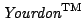

Next: Index
Up: Toolkit for Conceptual Modeling
Previous: 11. TCM File format
- 1
-
G. Booch, J. Rumbaugh, and I. Jacobson.
The Unified Modeling Language User Guide.
Addison-Wesley, 1999.
- 2
-
Marshall Brain.
Motif programming - The essentials and more.
Digital Press, 1992.
- 3
-
P.P.-S. Chen.
The entity-relationship model - Toward a unified view of data.
ACM Transactions on Database Systems, 1:9-36, 1976.
- 4
-
F. Dehne and H. van de Zandschulp.
Toolkit for conceptual modeling, design and implementation.
Technical report, Faculty of Computer Science, University of Twente,
2000.
http://www.cs.utwente.nl/~tcm.
- 5
-
F. Dehne and R.J. Wieringa.
Toolkit for conceptual modeling, user's guide for tcm 1.2.0.
Technical Report IR-401, Faculty of Mathematics and Computer Science,
Vrije Universiteit Amsterdam, April 1996.
- 6
-
F. Dehne and R.J. Wieringa.
The Yourdon Systems Method and the toolkit for conceptual
modeling.
Technical Report IR-414, Faculty of Mathematics and Computer Science,
Vrije Universiteit Amsterdam, December 1996.
- 7
-
F. Dehne and R.J. Wieringa.
Toolkit for conceptual modeling, user's guide for tcm 1.6.x.
Technical Report IR-437, Faculty of Mathematics and Computer Science,
Vrije Universiteit Amsterdam, November 1997.
- 8
-
T. DeMarco.
Structured Analysis and System Specification.
Yourdon Press/Prentice-Hall, 1978.
- 9
-
M. Fowler and K. Scott.
UML Distilled.
Addison-Wesley, 1997.
- 10
-
Dan Heller.
Motif Programming Manual, volume 6 of The Definitive Guide
to the X Window System.
O'Reilly & Associates, 1991.
For OSF/Motif Version 1.1.
- 11
-
M. Jackson.
System Development.
Prentice-Hall, 1983.
- 12
-
M. Lundeberg, G. Goldkuhl, and A. Nilsson.
Information Systems Development -- A Systematic Approach.
Prentice-Hall, 1981.
- 13
-
J. Martin.
Information Engineering.
Prentice-Hall, 1989.
Three volumes.
- 14
-
OSF (Open Software Foundation).
OSF/Motif Programmer's Guide, 1992.
For OSF/Motif Release 1.2.
- 15
-
OSF (Open Software Foundation).
OSF/Motif Style Guide, 1992.
For OSF/Motif Release 1.2.
- 16
-
OSF (Open Software Foundation).
OSF/Motif User's Guide, 1992.
For OSF/Motif Release 1.2.
- 17
-
Rational.
Unified Modeling Language: Notation Guide, Version 1.1.
Rational Software Corporation, 2800 San Tomas Expressway, Santa
Clara, CA 95051-0951, September 1997.
URL http://www.rational.com/uml/resources/documentation.
- 18
-
Rational.
Unified Modeling Language: Semantics, Version 1.1.
Rational Software Corporation, September 1997.
URL http://www.rational.com/uml/resources/documentation.
- 19
-
UML Revision Task Force.
OMG UML Specification.
Object Management Group, March 1999.
http://uml.shl.com.
- 20
-
P.T. Ward and S.J. Mellor.
Structured Development for Real-Time Systems.
Prentice-Hall/Yourdon Press, 1985.
Three volumes.
- 21
-
R.J. Wieringa.
Combining static and dynamic modeling methods: a comparison of four
methods.
The Computer Journal, 38(1):17-30, 1995.
- 22
-
R.J. Wieringa.
Requirements Engineering: Frameworks for Understanding.
Wiley, 1996.
ISBN 0 471 95884 0.
- 23
-
R.J. Wieringa.
Design methods for reactive systems: Yourdon, statemate and the uml.
Technical report, Department of Computer Science, University of
Twente, 1999.
Course notes.
- 24
-
R.J. Wieringa, W. de Jonge, and P.A. Spruit.
Roles and dynamic subclasses: a modal logic approach.
In M. Tokoro and R. Pareschi, editors, Object-Oriented
Programming, 8th European Conference (ECOOP'94), pages 32-59. Springer,
1994.
Lecture Notes in Computer Science 821. Revised and extended version
appears in [25].
- 25
-
R.J. Wieringa, W. de Jonge, and P.A. Spruit.
Using dynamic classes and role classes to model object migration.
Theory and Practice of Object Systems, 1(1):61-83, 1995.
- 26
-
R.J. Wieringa and J.-J.Ch. Meyer.
Actor-oriented specification of dynamic and deontic integrity
constraints.
In B. Talheim, J. Demetrovics, and H.-D. Gerhardt, editors, 3rd
Symposium om Mathematical Fundamentals of Database and Knowledge Base Systems
(MFDBS 91), pages 89-103. Springer, 1991.
Lecture Notes in Computer Science 495.
- 27
-
W.A. Woods.
Transition network grammars for natural language analysis.
Communications of the ACM, 13(10):591-606, October 1970.
- 28
-
Douglas A. Young.
Object Oriented Programming with C++ and OSF/Motif.
Prentice Hall, 1991.
- 29
-
Douglas A. Young.
The X window system, programming and applications with Xt.
Prentice Hall, 1994.
OSF Motif edition.
- 30
-
E. Yourdon.
Modern Structured Analysis.
Prentice-Hall, 1989.
- 31
-
Yourdon Inc.
 Systems Method: Model-Driven
Systems Development.
Prentice-Hall, 1993.
Henk van de Zandschulp
2003-01-20